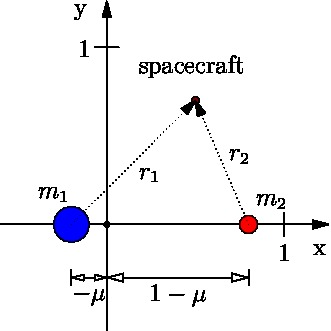

The Circular Restricted Three Body Problem
Trajectories for flights from the Earth to the Moon cannot be solved
directly, but an approximation that is called the Circular Restricted
Three Body Problem (CRTBP) can help in finding appropriate
trajectories. The approximation is such that the spacecraft has
practically no mass, compared to the earth and the moon, and that the
orbit of the moon around the earth is close to circular.
Two masses $m_1$ and $m_2$ orbit their common center of mass. A
spacecraft that has a mass so small that it does not affect
bodies $m_1$ and $m_2$ gravitationally, but its trajectory is
determined by the two larger bodies.

We choose a reference frame that rotates such that the origin is
at the center of mass, and bodies $m_1$ and $m_2$ are fixed on
the x-axis.
Dimensionless coordinates parameter:
\begin{equation} \mu=\frac{m_1}{m_1+m_2}\end{equation}
Equations of Motion (EOM)
\begin{equation} f(\mathbf{x})=\begin{bmatrix} \ddot{x}
\\\ddot{y} \\\ddot{z} \end{bmatrix}=\begin{bmatrix} x+2 \dot{y}
-\frac{1-\mu}{r_1^3}(x+\mu)-\frac{\mu}{r_2^3}(x-1+\mu) \\
y-2\dot{x} -\frac{1-\mu}{r_1^3}y-\frac{\mu}{r_2^3}y \\
-\frac{1-\mu}{r_1^3}z-\frac{\mu}{r_2^3}z
\end{bmatrix}\end{equation}
with
\begin{equation} r_1= \sqrt{(x+\mu)^2+y^2+z^2}
\end{equation}
and
\begin{equation} r_2= \sqrt{(x-1+\mu)^2+y^2+z^2}
\end{equation}
Jacobi Integral C
The equations of motion imply that there is a conserved
quantity. We call this quantity C, and it is called the Jacobi
integral.
\begin{equation} C=
x^2+y^2+2\frac{1-\mu}{r_1}+2\frac{\mu}{r_2}-(\dot{x}^2
+\dot{y}^2+\dot{z}^2 ) \end{equation}
It is equivalent to the total energy of a body on a
ballistic trajectory in an inertial reference frame in a conservative
force field. For any given location $(x,y,z)$ , the greater the
velocity $(\dot{x},\dot{y},\dot{z})$ is, the smaller the
value of C is because of the minus sign in front of the velocity term.
Zero velocity curves and Libration Points
In an inertial reference frame and a conservative force
field, a body has kinetic and potential energy, and the total energy
which is constant. The potential energy depends on the location only.
When we throw a rock up in the air, it will stop at one point at which
all the energy is in the potential energy.
Similarly in the CRTBP, there are locations where the
velocity is zero, and all of the C quantity is contained in the
location. These locations are either points (five libration points) or
curves (zero velocity curves) which are closed curves that enclose one
or two of the bodies (for values of C > C(L5), see below ).
Libration Points
Since we don't have the values of C for the zero
velocity points, we can't use the Jacobi integral equation to
find these points. We use the EOM's such that
\begin{equation} f(\mathbf{x})=\mathbf{0}\end{equation}
The first three libration points $L_1$,$ L_2$, and $L_3$ lie
on the x-axis:
\begin{equation} y=0, z=0,
\dot{x}=0,\dot{y}=0,\dot{z}=0 \end{equation}
Only the first EOM gives a non-trivial condition for x. The
distances reduce to
\begin{equation} r_1= |x+\mu|
\end{equation}
and
\begin{equation} r_2=|x-1+\mu|
\end{equation}
and the condition for x for $L_1$,$ L_2$, and
$L_3$ is
\begin{equation} 0=x
-\frac{1-\mu}{{|x+\mu|}^3}(x+\mu)-\frac{\mu}{{|x-1+\mu|}^3}(x-1+\mu)
\end{equation}
Librations points $L_4$ and $L_5$ lie on the corner of an
equilateral triangle whose base is the line between the two bodies and
has the length $l=1$.
The x-coordinates are in the middle between the two bodies:
\begin{equation} x_{4,5}= -\mu+\frac{1}{2}
\end{equation}
The y-coordinates are $y_{4,5}=\pm \frac{\sqrt{3}}{2}
$
So
\begin{equation} L_4= (-\mu+\frac{1}{2},
\frac{\sqrt{3}}{2}) \end{equation}
\begin{equation} L_5= (-\mu+\frac{1}{2},
-\frac{\sqrt{3}}{2}) \end{equation}
Now that we have the coordinates of the libration points,
we can compute the corrresponding Jacobi energy values $C_1$, $C_2$,
$C_3$ ,$C_4$, and $C_5$.
The distances are
\begin{equation} r_1= |L_1+\mu|
\end{equation}
and
\begin{equation} r_2=|L_1-1+\mu|
\end{equation}
and the energy level of $C_1$ is
\begin{equation} C_1=
(L_1)^2+2\frac{1-\mu}{r_1}+2\frac{\mu}{r_2}\end{equation}
(The equivalent equations for $C_2$, $C_3$ ,$C_4$,
and $C_5$.)
Zero velocity curves
We obtain the zero velocity curves by setting a value for C and
then finding the $(x,y,z)$ which solve the Jacobi equation
with $(\dot{x},\dot{y},\dot{z})=(0,0,0)$.
Classes of Orbits and Trajctories
On the zero velocity curves, the velocity is zero which means
that the spacecraft does not move. From here, the spacecraft could go
both ways by a perturbation: back into the region or away from the
region. A stability examination would reveal that a perturbation would
move the spacecraft back into the region. Therefore, the zero-velocity
curves present an impenetrable boundary for ballistic trajectories.
The energy level $C_{L_1}$ of the $L_1$ libration point is of
particular interest. If the energy of the spacecraft is below that
level, then it is caught in an orbit around either $m_1$ or $m_2$. If
the energy level of the spacecraft is $C_{L_1}$, then the
spacecraft can barely pass through $L_1$ and transit from an orbit
around one of the two masses to an orbit around the other. If the
energy of the spacecraft is above $C_{L_1}$, then the spacecraft
can pass through points near $L_1$, in addition to $L_1$.
Therefore, the energy level $C_{L_1}$ represents the minimum
energy to travel from one body to the other.